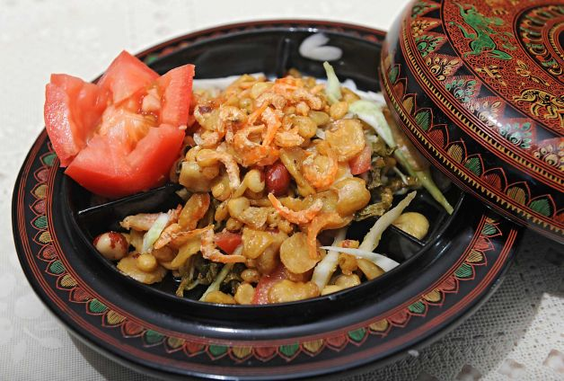
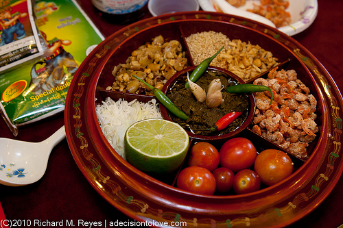

La Phat Thoke
Ingredients
- 5 teaspoons laphet (fermented tea leaves)
- 2 teaspoons crispy fried garlic
- 2 teaspoons crispy fried yellow beans
- 2 teaspoons roasted peanuts
- 1 teaspoon toasted sesame seeds
- Extra Ingredients (add to your liking)
- Chopped Tomato
- Chopped Cabbage
- Dried Prawns
- Peeled Garlic
- Green chili
- Dressing:
- 1/2 teaspoon limejuice
- 3 teaspoons peanut oil
Instructions
- First, put laphet (fermented tea leaves) into a bowl. If you want your laphet to be spicy, pound la-phet and green chili together in a mortar.
- It'll became a paste. Pour 3 teaspoons of peanut oil. Leave it for awhile so that laphet can soak up the oil.

- Put in crispy fried garlic, crispy fried yellow beans, roasted peanuts and sesame seeds in the bowl. Mix them together.
- You can also add chopped tomato, chopped cabbage, dried prawns, peeled garlic and green chili as you like.

- Put 1/2 teaspoon of limejuice, and some soysauce to your liking.